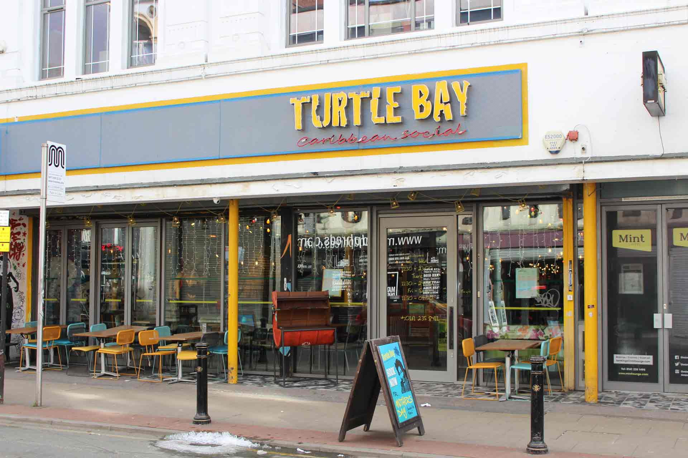
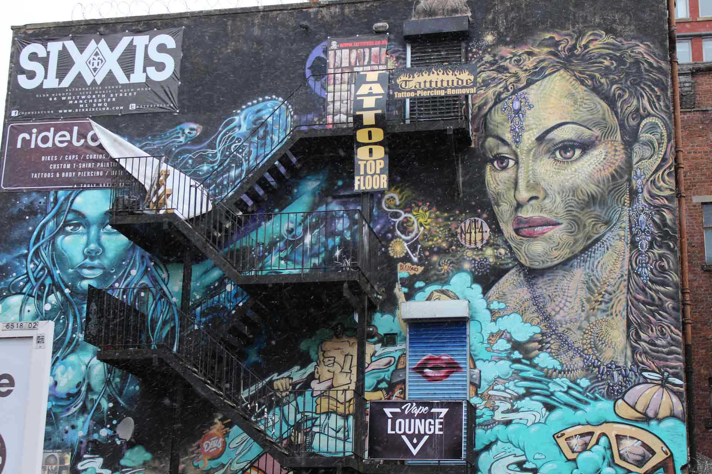

Welcome
Welcome to Explore Northern Quarter, here you will find a guide of the finest food and drink places around the famous Northern Quarter area of Manchester. These guides will include reviews, photos and maps to help you choose and be informed on the best places to eat, chill out with a coffee and have drinks with friends. Northern Quarter is also known for its beautiful Street Art so a section dedicated to various pieces, what they are of, including a short description and map location and photo gallery is also on offer.
Food & Drink

Morbi eu cursus diam. Curabitur vestibulum consequat scelerisque. Etiam viverra vulputate ligula, in accumsan justo feugiat dictum. Sed id metus nisl. Vestibulum sodales massa at varius molestie. Cras quis venenatis nisi, quis tincidunt sem. Phasellus eu sapien vitae purus faucibus fermentum. Maecenas augue felis, bibendum quis urna at, mattis aliquam purus. Morbi vel lobortis ante. Quisque sollicitudin mauris sed risus blandit, sit amet mattis lorem varius. Aliquam scelerisque nibh nisi, a porta nisl convallis vel. Nulla ligula augue, mollis vitae pulvinar eu, fringilla at arcu.
Street Art

Morbi eu cursus diam. Curabitur vestibulum consequat scelerisque. Etiam viverra vulputate ligula, in accumsan justo feugiat dictum. Sed id metus nisl. Vestibulum sodales massa at varius molestie. Cras quis venenatis nisi, quis tincidunt sem. Phasellus eu sapien vitae purus faucibus fermentum. Maecenas augue felis, bibendum quis urna at, mattis aliquam purus. Morbi vel lobortis ante. Quisque sollicitudin mauris sed risus blandit, sit amet mattis lorem varius. Aliquam scelerisque nibh nisi, a porta nisl convallis vel. Nulla ligula augue, mollis vitae pulvinar eu, fringilla at arcu.